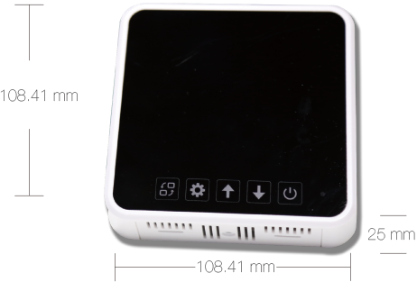
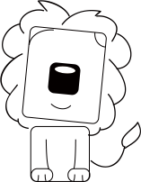

想到之前
已经做到
爪爪Paw
迅敏的爪爪
场景化智能触发
很多所谓的智能控制
只是把手动控制转移到APP端
这是“伪智能”
很多人都曾经历过忙碌的周一，
忙得连水都忘了喝，
哪能想的起来掏出手机把新风调成大风？
很多老人智能机都不会用
更别提操作APP
儿女鞭长莫及，不能随时根据爸妈家的空气质量，
调控新风
爪爪Paw
它接收脑瓜下达的指令，通过多种模式
场景化制动触发
手动轻触控制
APP智控
完成新风智能控制
爪爪是系统执行的必须设备，需配合灵敏鼻与脑瓜使用
场景化智能控制
分人群|分房间|分时间|分用户
多规则并行
实时侦测
智能控制
智能到无感知
智能到无感知
有外网链接
无外网连接，微云自组网可保证设备正常运行
侦测室内室外空气
鼻鼻依靠强大智能核，对上传数据分析运算
按之前设定的分房间、分人群、分时间模式进行处理
自动触发完成控制
显示更直观
“伟大”
如霍金也需要智能设备的支持
APP智控：
内置ZigBee模块，与脑瓜交互，完成自动化控制
手动控制：
仪表显示各项数据，直接操作也方便
产品规格
product standard
开关
手动风速加用，及设置实时时间加用
手动风速减用，及设置实时时间减用
设置实时时间用
长按可用做发送新风控制盒板载设置PANID
缺省值命令数据包
自主研发设计、极简造型
白色PC工程塑料，耐热耐候、尺寸稳定性、耐冲击性能

网口接入、安装方便
超长寿命
红色双色LED指示灯
闪烁或常亮指示当前家庭中心的工作状态。
*外形尺寸: 105*105*25mm（墙体之外）
65*60*35mm（墙内86盒）
*预热时间:1分钟
*材质:PC工程塑料
*颜色:白色壳体黑色显示屏保护板
*无线距离： 100米（开阔地）
*工作频率：2.4G HZ
*安装孔距： 60mm(标准86盒)
*响应时间: ≤10秒
*输出：接线端子排 （三速或两速新风机 ）
*恢复时间: ≤30秒
*湿度显示范围： 0---100%
*温度显示范围： 0℃---℃
*VOC显示范围： 0.1ppm---999.9ppm
*pm2.5显示范围： 0.1ug/m3---999.9ug/m3
*使用寿命: ≥10年
*额定电压: AC220V 50Hz
*工作温度: -10℃ --- +50℃
*待机功耗: ≤3W
*工作湿度: 5％RH---90％RH(非结露)
*控制功率: ≤2000W
*存储温度: -10℃ --- +60℃
*存储湿度:≤60％RH